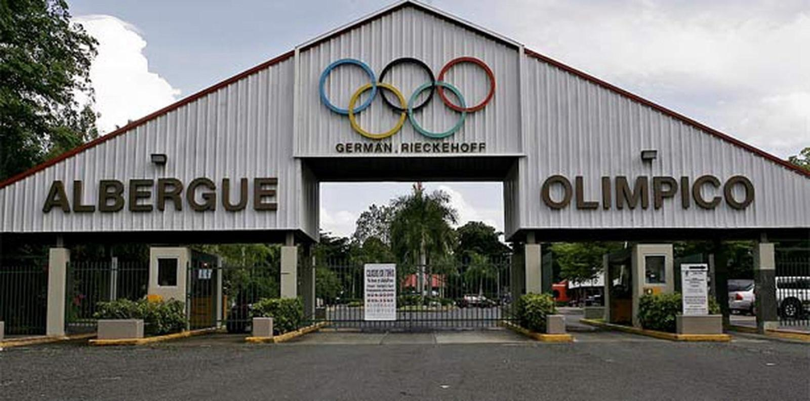
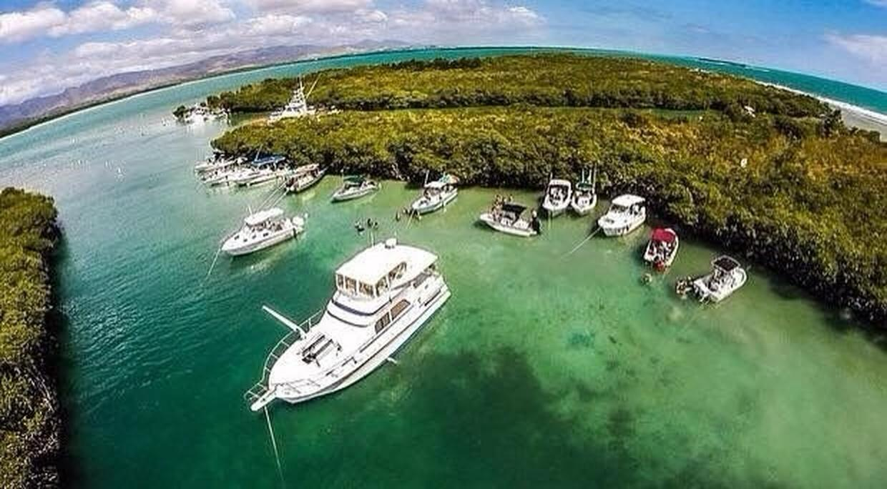
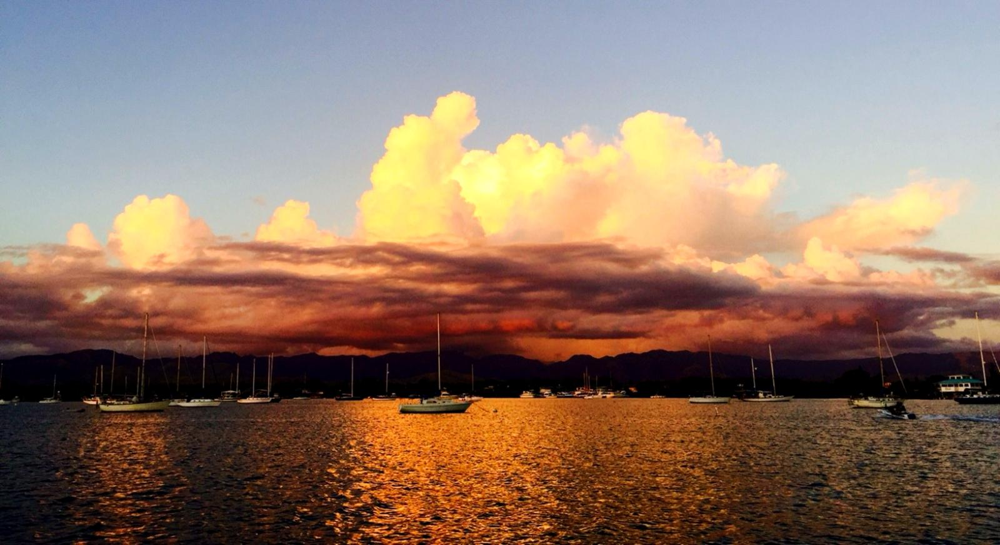
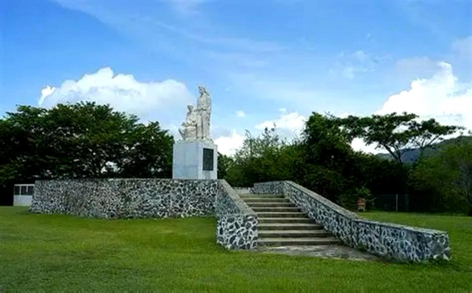
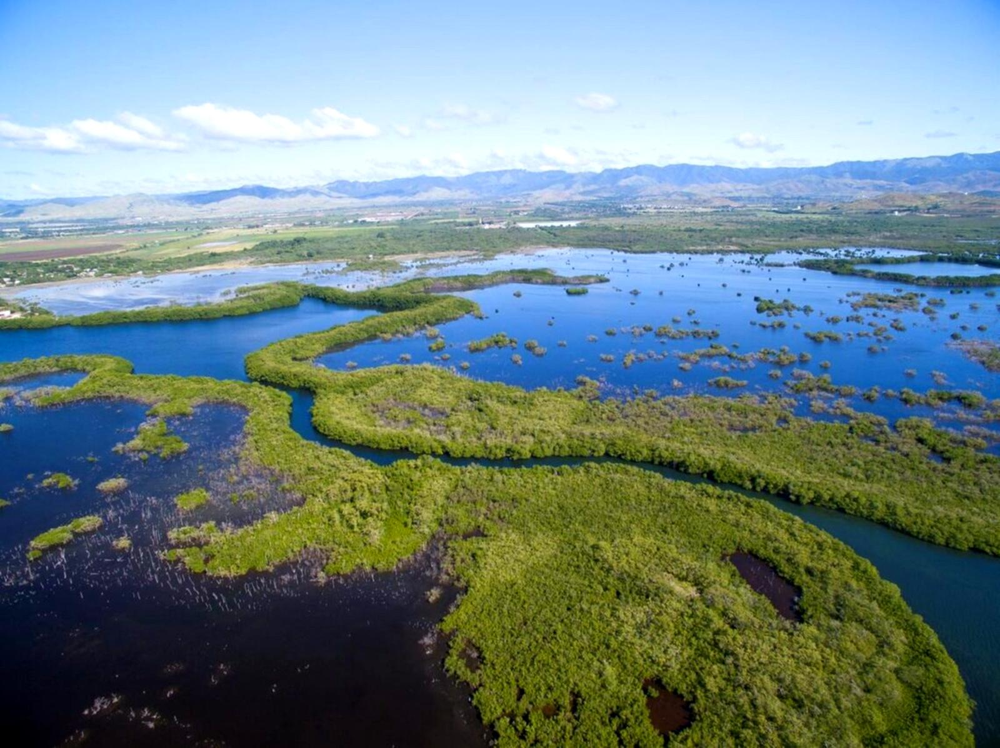
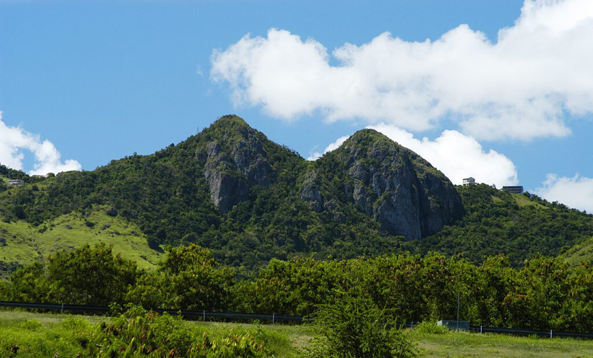
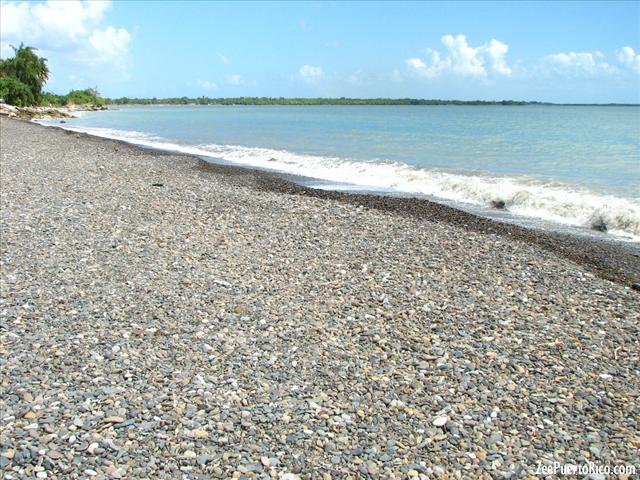

ATRACCIONES TURÍSTICAS
Albergue Olímpico Germán Rieckehoff

Complejo deportivo y recreativo con múltiples instalaciones, incluyendo parque acuático, museos y áreas para actividades familiares.
Cayo Matías

Pequeña isla natural rodeada de manglares, ideal para pasar el día, disfrutar de la playa y actividades acuáticas.
Salinas Speedway
Pista de carreras donde se realizan eventos de autos, ofreciendo adrenalina y entretenimiento para los visitantes.
Bahía de Salinas

Área costera perfecta para paseos, kayak y disfrutar de la vista al mar junto a restaurantes y el famoso mojo isleño.
Monumento al Jíbaro Puertorriqueño

Monumento emblemático que representa la cultura puertorriqueña, ubicado en un área con vistas panorámicas.
Reserva Natural Bahía de Jobos

Área protegida con gran diversidad de flora y fauna, ideal para aprender sobre la naturaleza y el ecosistema del área.
Las Piedras del Collado (Las Tetas de Cayey)

Formación montañosa popular para senderismo y aventuras al aire libre, con vistas impresionantes.
Playa La Ochenta

Playa tranquila perfecta para relajarse, nadar y disfrutar del ambiente costero de Salinas.